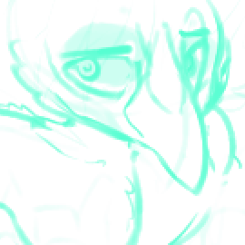

Known Relationships
Hex Mira ------------ Friend Ezra ---------------- [Decrypting...]
Full Name ------ Silver Praehun Species -------- Carrion Crow Height --------- [DECRYPTING...] Age ------------ 26 Gender --------- Male Pronouns ------- [UNDECRYPTED] Sexuality ------ Demisexual Personality ---- Shy, Reserved Birthplace ----- [UNDOCUMENTED] Residence ------ Nocturne City Favorite Food -- [] Favorite Drink - Absinthe
Hex Mira ------------ Friend Ezra ---------------- [Decrypting...]
[Designer's Note:] this man gets no bitches dude if you walked into his room while he was asleep it would look like a corpse thrown away on a pile of trash bags. not asmongold levels of filth but I doubt they would bother owning a bed when their nervous system is shot to hell.
[VOICE TRANSCRIPT SYSTEM 005] Hello? Is this working? You should be able to hear me through this, right, Ezra? H-helloooo? Err... I'll just... text them, I hope I didn't break it already...
Silver was born with various birth defects, the most debilitating of which being malformed wings. They appear lower on his body, causing discomfort, neuropathy, posture issues, pain, and other chronic issues. In addition to this, both legs are prosthetic and rely on gravity and mechanical linkages to walk, rather than the typically-used myoelectric signal due to neuropathy. A resulting effect of these physical problems are a broad disregard for their own health, comfort, and safety — and has expressed that some amenities are designed by and for 'whole' people. He does not own a bed; and instead piles their belongings in the center of their bedroom as a nest to sleep in.
resides within Nocturne City, and will "sentinel" on the roofs of buildings and peer down at alleyways and roads. Questioning about this behaviour has detailed following darker-than-night creatures that are "stealing parts" from varying building infrastructure. He is unable to follow these individuals due to being unable to jump the required distance between roofs.